Three INDOT bridges rebuilt in Blender and rendered with Cycles using only their NBI inspection reports: the structure inventory data (type, spans, widths, skew, clearances), the element quantities and the inspection photographs. Each model is generated parametrically from the extracted data and checked back against the report.
From the north bank: deep slab coping with the vertical parapet on top, nine black steel-encased piles per bent standing in the creek, riprap slopes, winter trees.
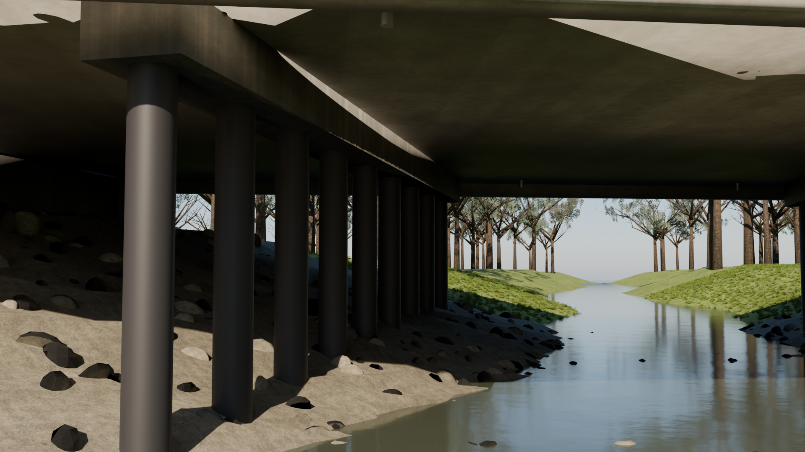
Pier 2 pile bent: 14 in. epoxy-coated piles, cap integral with the slab, water 12.95 ft below the deck.
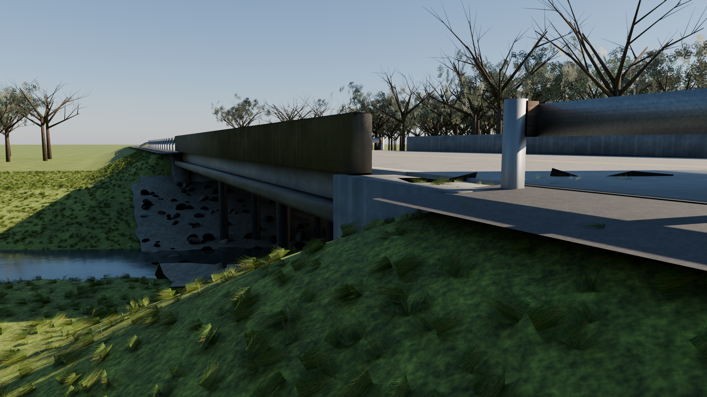
West abutment with wingwalls, riprap revetment and the slab soffit.
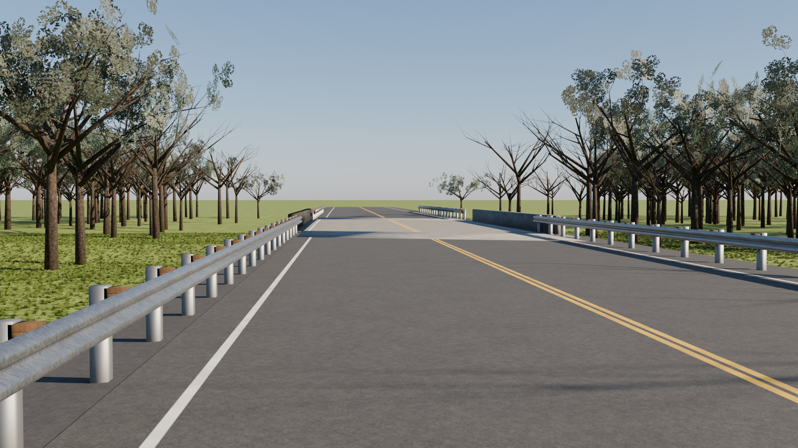
West approach: two-lane asphalt, concrete approach slab, W-beam guardrail flaring into the parapets.
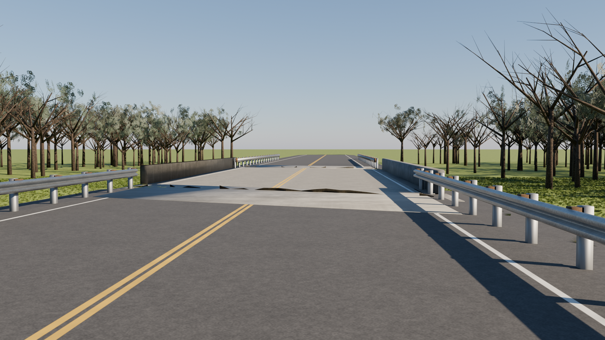
On the deck looking east.
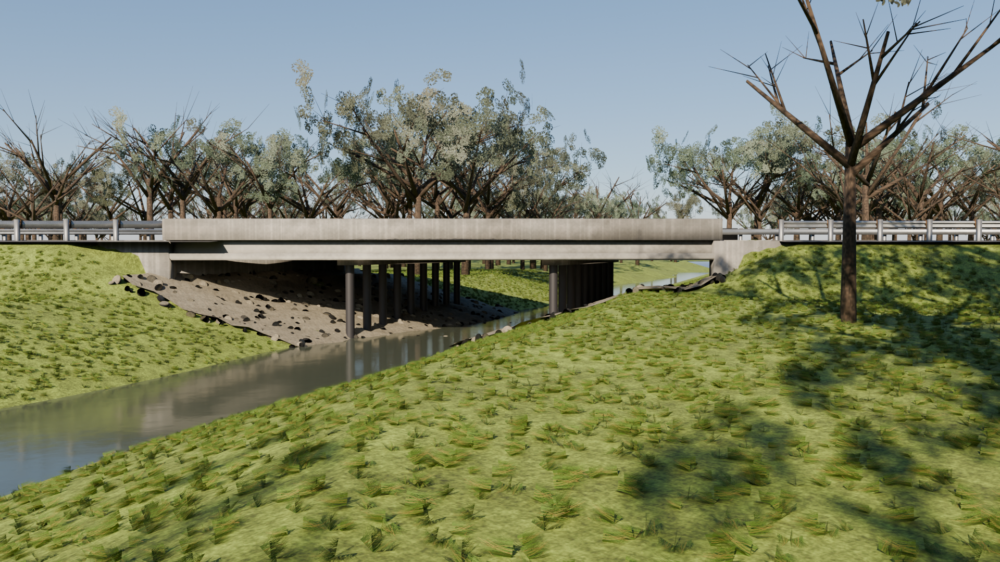
Downstream channel alignment.
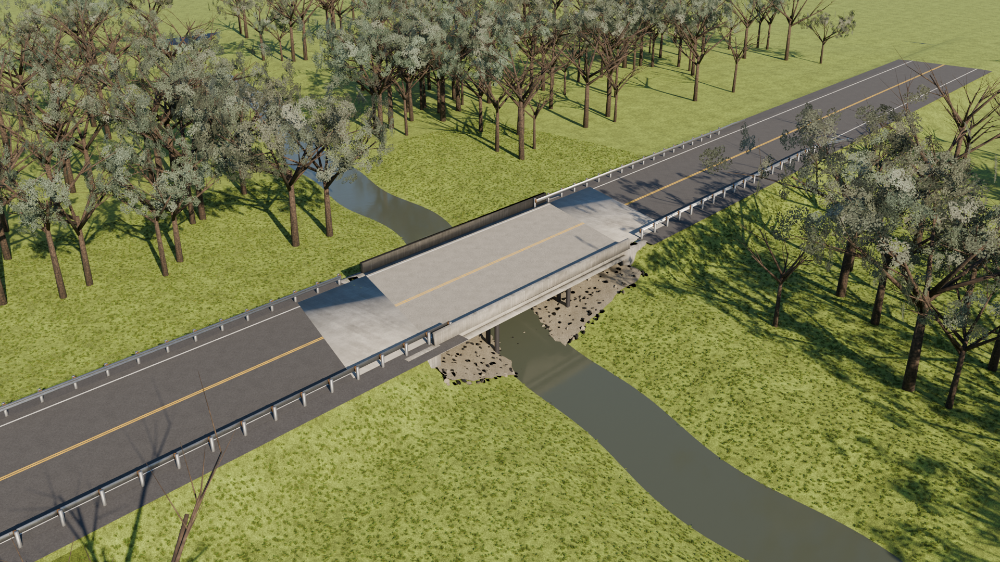
Aerial: the 20° skew of the bents follows the creek.
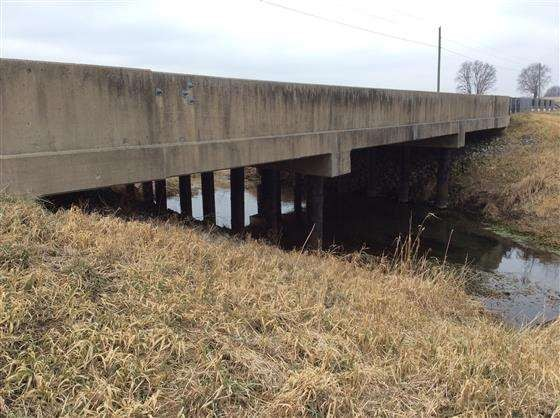
Report photo 1 – north profile
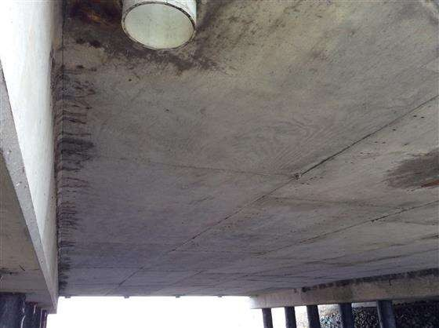
Photo 22 – span B underside
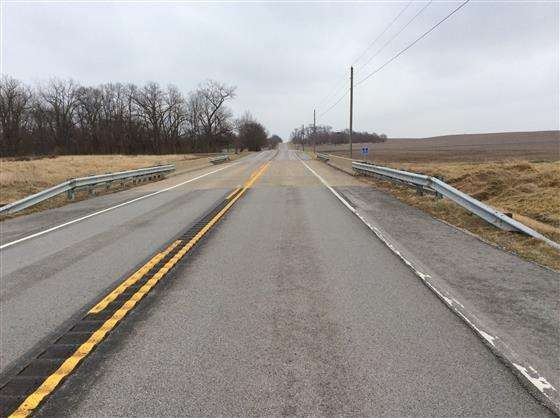
Photo 3 – road alignment looking east
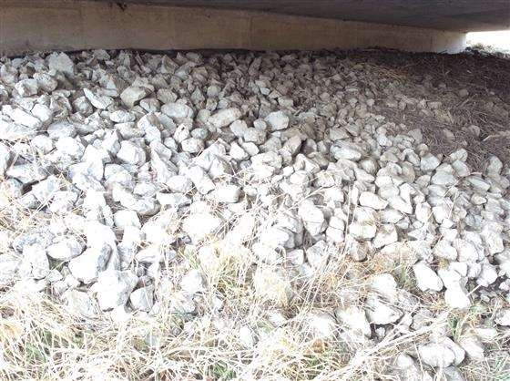
Photo 14 – west slope
I-70 EB over Bayliss State Ditch
NBI 041750 · Morgan County · 3-span reinforced-concrete slab on solid pier walls · 25 + 32 + 25 ft · 43 ft deck, 39.5 ft roadway · 15° skew · built 1966, overlays 1980/1995 · inspected Sep 2021
Spans C–E from the north: green-painted W36 girders, hammerhead piers, chain-link fence on the parapets over the CSX track.
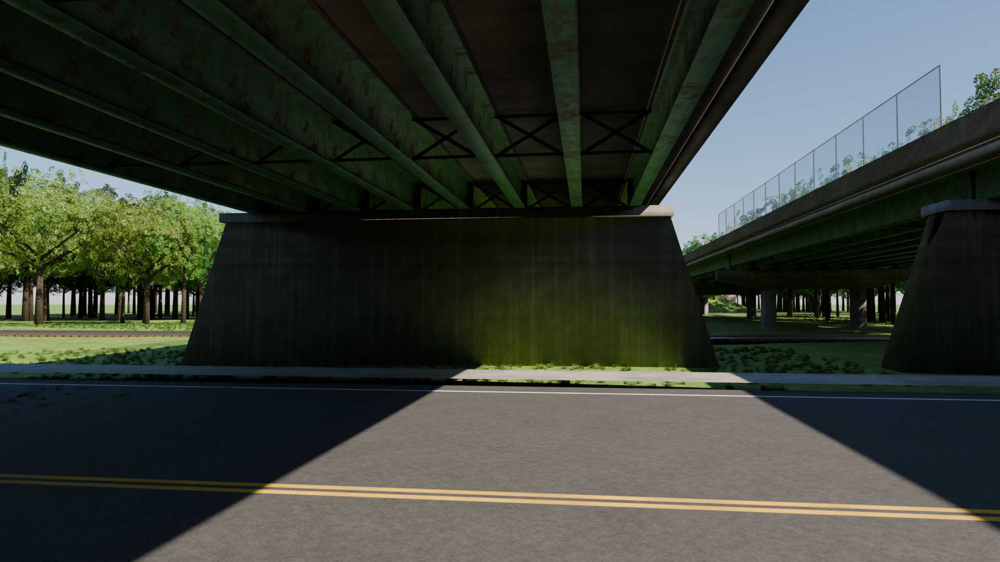
From 9th Street: pier 2 wall with battered ends, rocker bearings, cross-frames; the EB twin to the right.
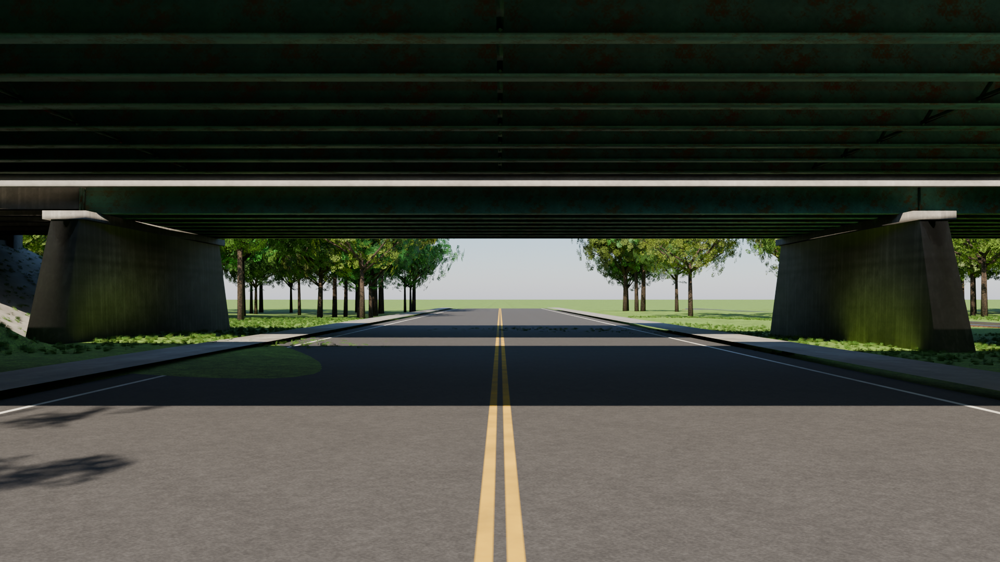
9th Street (4 lanes) between piers 2 and 3, 14.2 ft clearance.
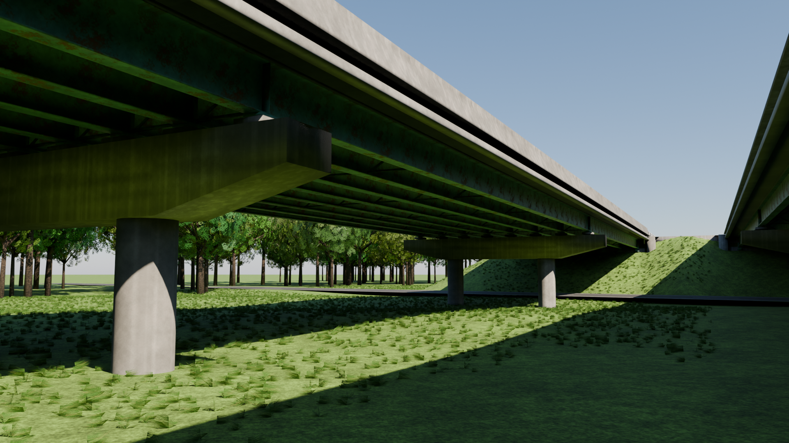
Pier 5: two 3.5 ft columns and the tapered hammerhead cap.
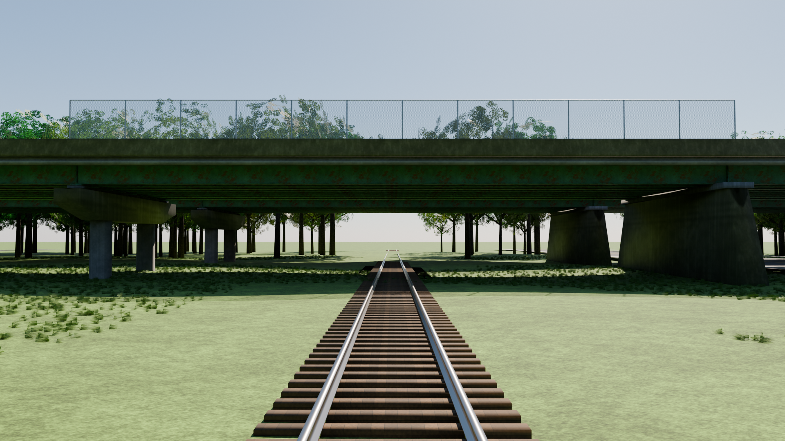
CSX track under span C, fence above.
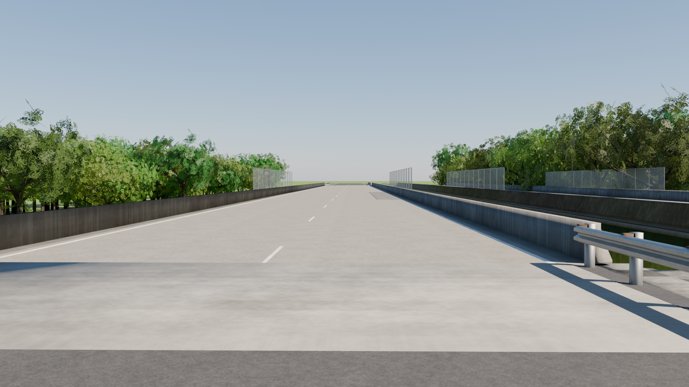
Two WB lanes, NJ parapets, latex overlay.
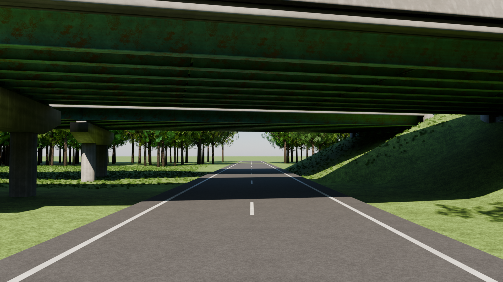
Ramp under span F, pier 6 and the east abutment.
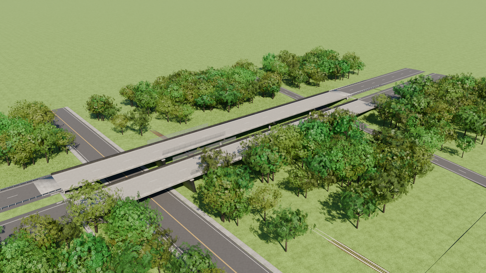
Aerial: 525 ft WB structure with the EB twin to the south.
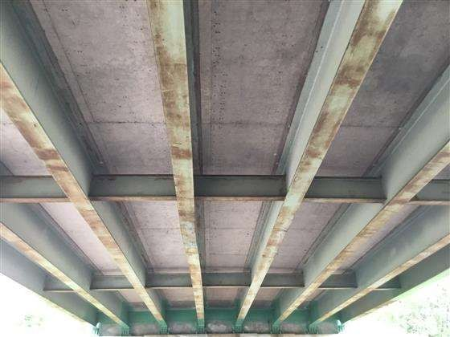
Report photo 21 – span B
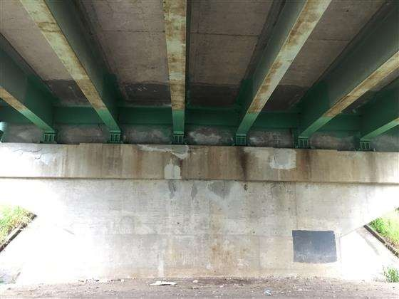
Photo 24 – pier 2 cap
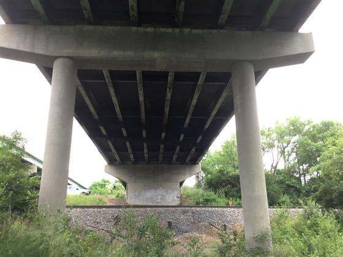
Photo 34 – pier 4 with cap
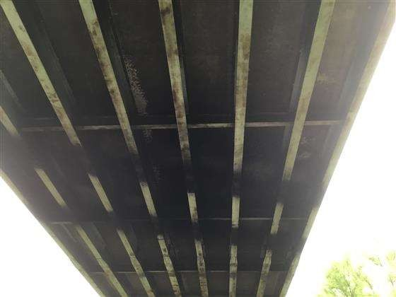
Photo 30 – span C looking west
How it was built and checked
The report text was parsed for the NBI items (43 structure type, 45/46 spans, 49 length, 51/52 widths, 34 skew, 54 clearance), the element list (deck, slab, girders, piers, piles, bearings, joints, railings) and the channel profile. blender/bridge_gen.py turns that data into a complete scene with Blender as a Python module: terrain, embankments, superstructure, substructure, pavement and markings, guardrail, riprap, water, trees and grass, a Nishita sky and PBR materials with generated textures. The renders are Cycles at 1920×1080 with OpenImageDenoise. tools/verify_model.py reads the exported GLB and checks every count and dimension against bridge.json; tools/compare_photos.py pairs each render with the inspection photo it should match, for review by a person or a vision model (see AGENTS.md).
Bridge
Superstructure
Substructure
Under the bridge
SR 28 / Little Wea Creek
20 in. RC slab, deep coping, vertical parapet, 4 in. PVC drains
Spill-through abutments on piles; 2 pile bents × 9 black steel-encased piles
Creek, riprap revetment, dry winter fields
I-70 / Bayliss State Ditch
22 in. RC slab, stepped coping, NJ parapet, latex overlay